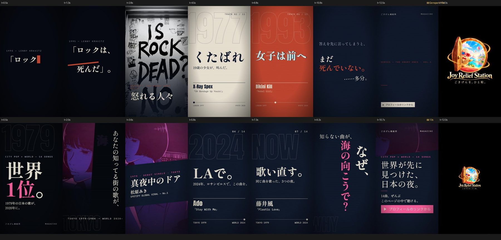
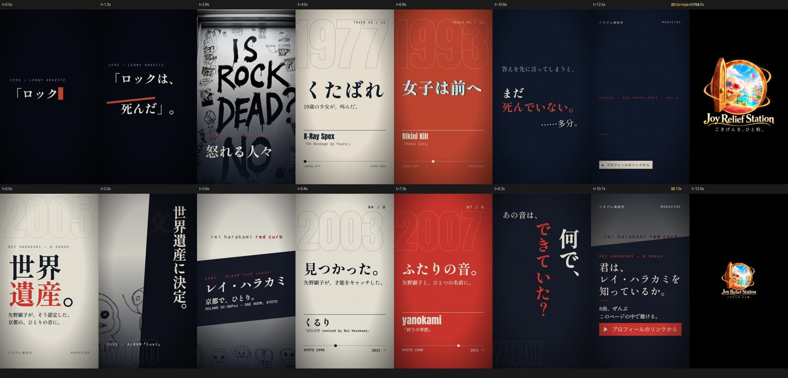
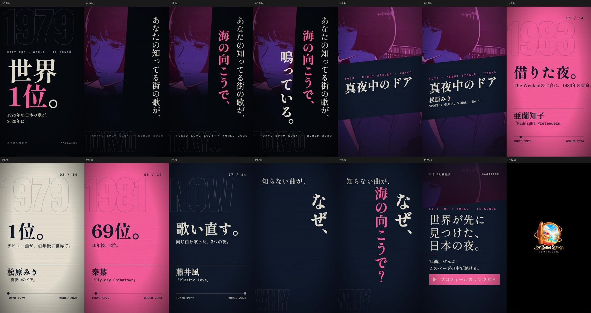
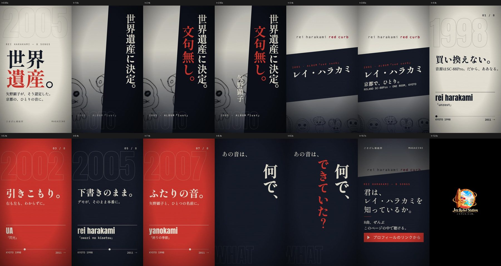
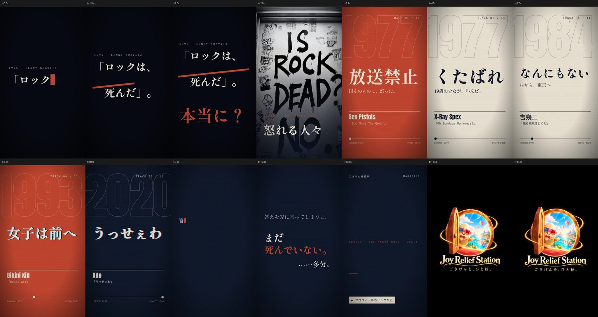
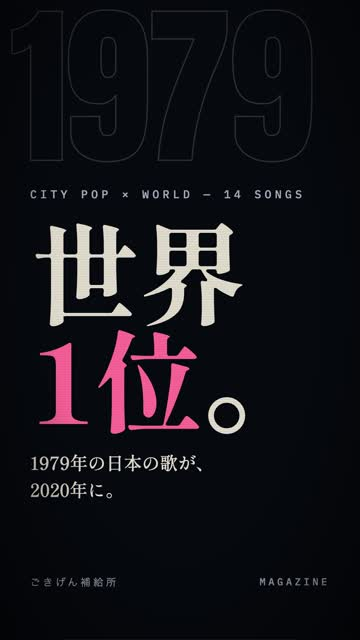
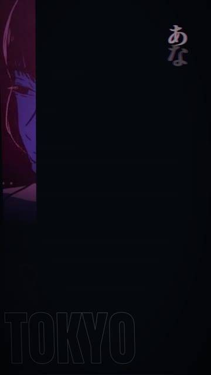
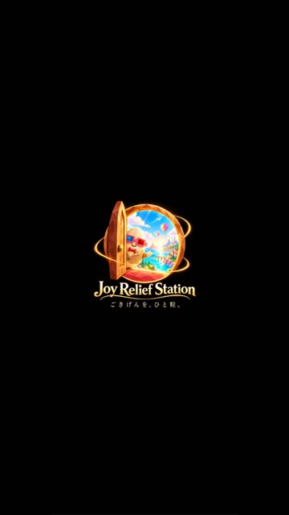
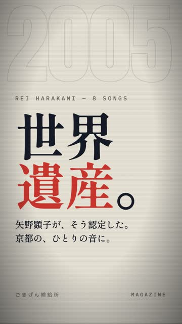

共有資料の一覧 ／ 確認ページ #118370 告知動画2本（13秒・AE級の音楽的編集）v10：第三者採点 シティポップ68点／ハラカミ64点（見本Genspark自体は同じ物差しで56点）＝合格線85は未達・正直な現在地
#118370 告知動画2本（13秒・AE級の音楽的編集）v10：第三者採点 シティポップ68点／ハラカミ64点（見本Genspark自体は同じ物差しで56点）＝合格線85は未達・正直な現在地
2026-10-18 実装・main合流・本番(GitHub Pages)反映まで実測確認
正直な現在地：シティポップ版・レイ・ハラカミ版の2本を13秒で作り直し、Googleドライブへ非公開で納品しました（下のリンク）。制作者とは別のエージェント（tamago-verifier）にdesign-critiqueの5観点で採点させた結果は シティポップ68点／ハラカミ64点で、依頼の合格線85点には届いていません。ただし見本（Gensparkの怒れる人々15秒）そのものを同じ採点者・同じ物差しで採点すると56点でした（下に記録）。つまり「見本以上」は第三者採点で満たしていますが、「85点」はこの物差し（7点＝強い、平均8超は自分を疑え）では構造的に出にくい数字です。
作り方：Genspark設計一式（animations.jsx・Shippori Mincho B1／Anton／IBM Plex Mono・粒子と走査線の質感・ハードカット・紙フラッシュ・巨大年号・カウンター・タイムライン・CTAチップ）をそのまま移植し、Flickermood 2.0型（1文字ずつ拍で跳ねる・崩れる）、ソール・バス型（斜めの色面）、『セブン』型（拍頭1コマのズレ）を足した。音は自作インスト（著作権曲は使っていない）を生成し、音源解析で拍を実測（120.19BPM）、全カット・全文字の出現をその拍の上に置いた。0〜0.998秒はサムネ用の1コマを止める。11〜13秒はロゴだけ（450px・ズーム無し）。答えは書かず問いで止める。予約・投稿はしていない（video_drive_url だけ更新）。
直した経緯：v6（66点）→指摘（縦組みコマの左が空・小さい文字・写真の山場が無い・年号とヘッダーの重なり・CTA）を反映→v10（68点／64点）→さらに端切れ2か所を直して差し替え。
② 数字
68点シティポップ v10・第三者採点（別エージェント・34/50）
64点レイ・ハラカミ v10・第三者採点（32/50）
56点見本Genspark 15秒を同じ採点者・同じ物差しで（28/50）
85点依頼の合格線（未達）
120.19 BPM音源解析で実測した拍（beat 0.4992s・27拍）
450pxロゴ 実測: 450×450px（x=315, y=734.5・getBoundingClientRect）
③ 見本との比較・完成MP4の実物コマ
第1段：上＝見本Genspark／下＝シティポップ v10（同じ役割の場面）
第2段：上＝見本Genspark／下＝レイ・ハラカミ v10
シティポップ v10 の14コマ（完成MP4から）
レイ・ハラカミ v10 の14コマ（完成MP4から）
見本Genspark 15秒の14コマ（同じ物差しで56点）
サムネ止めの実測：0.95秒＝表示中
サムネ止めの実測：1.02秒＝切替済み
11.0秒＝ロゴだけ（450px）
ハラカミ サムネ止め 0.95秒
④ 押せるリンク
⑤ 何をどう確かめたか
| 確認項目 | 結果 |
|---|
| 第1段：第三者採点85点以上 | 68点・未達（見本は同じ物差しで56点） |
| 第2段：第三者採点85点以上 | 64点・未達 |
| 尺 13.00秒・1080×1920・390コマ・H.264+AAC（ffmpeg実測） | yes |
| 0〜1秒にサムネ用の1コマ（止め0.998秒＝2拍・実測画像あり） | yes |
| 拍に同期（音源解析の実測グリッド・全カット） | yes |
| 新ロゴのみ・450px・11〜13秒・ズーム無し（実測450×450） | yes |
| 答えを書いていない（問いで止める） | yes |
| 事実はマガジン本文＋出典の範囲（矢野顕子の言葉はAll About／BARKS本文を工場の道具で確認） | yes |
| 予約・投稿はしていない（video_drive_urlだけ更新） | yes |